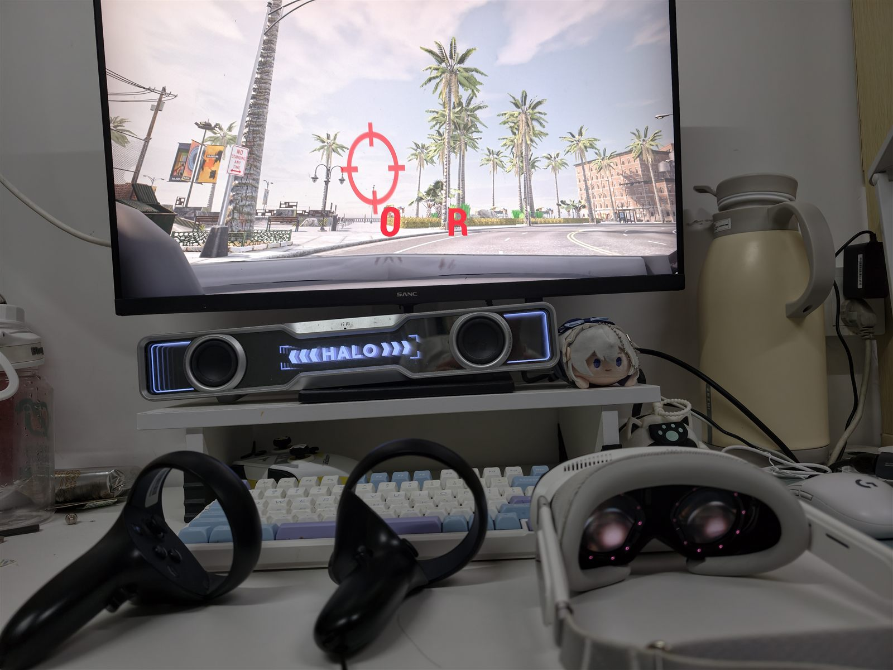
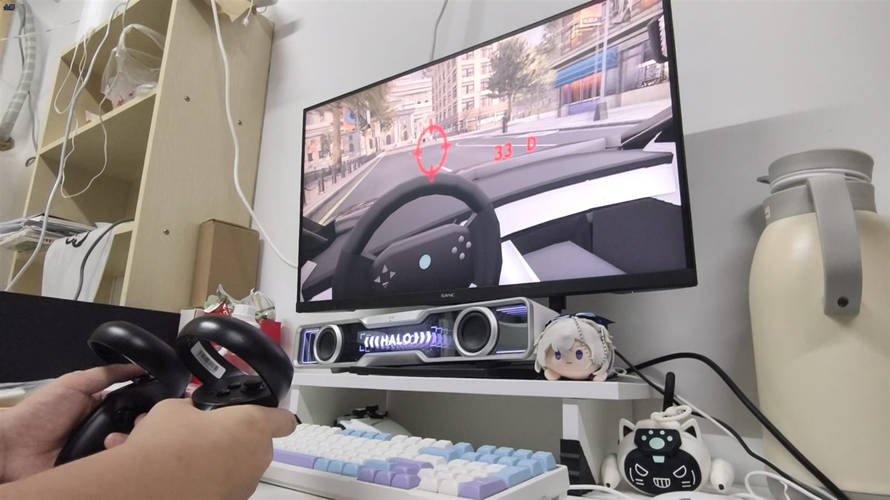

Pimax Dream Air 手柄驾驶
本页介绍如何在 OpenHUTB（DReyeVR）中使用 Pimax Dream Air 系列头显（Dream Air / Dream Air Lite）搭配 Pimax Crystal 手柄进行驾驶。
效果预览
设备图样：Pimax Dream Air 头显与 Crystal 手柄置于桌面，显示器同步输出旁观（spectator）画面，红字 0 R 表示当前车速 0、倒挡。

手柄驾驶：显示器为座舱视角，方向盘随左摇杆实时转动，红字 33 D 表示时速 33 km/h、前进挡。

工作原理
Pimax 的 SteamVR 驱动（aapvr）会把 Crystal 手柄上报为 oculus_touch 设备类型，而 DReyeVR 的 SteamVR 输入绑定本身就包含 oculus_touch 的配置文件，因此手柄即插即用，无需修改引擎代码。驾驶功能通过以下配置实现：
CarlaUE4/Config/SteamVRBindings/steamvr_manifest.json：声明输入 action（转向为 vector2 类型，油门/刹车为 axis，按钮为 boolean）；CarlaUE4/Config/SteamVRBindings/oculus_touch.json：把手柄物理按键映射到上述 action；CarlaUE4/Config/DefaultInput.ini：把 SteamVR action 绑定到 DReyeVR 的按键事件（如OculusTouch_Right_A_Click）。
运行方法
- 启动 Pimax Play，确认头显与手柄已连接、SteamVR 就绪；
- 启动模拟器（打包版示例）：
.\CarlaUE4.exe /Game/Carla/Maps/Town02?GAME=VR -vr
- 戴上头显即可开始驾驶；显示器上同步显示旁观画面，可供旁观者确认车辆状态（速度/挡位）。
手柄键位
| 功能 | 操作 |
|---|---|
| 转向（比例） | 左摇杆左右 |
| 油门（比例） | 右手扳机 |
| 刹车（比例） | 左手扳机 |
| 倒挡/前进挡切换 | A |
| 左转向灯 | X |
| 右转向灯 | B |
| 下一个摄像机视角 | Y |
| 上一个摄像机视角 | 右摇杆按下 |
| 自车/旁观视角切换 | 左摇杆按下 |
| 座椅升高 / 降低 | 右手柄握把 / 左手柄握把 |
| 座椅前后左右移动 | 右摇杆四向 |